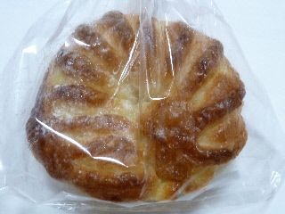
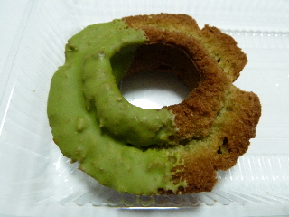
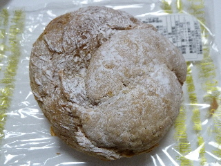
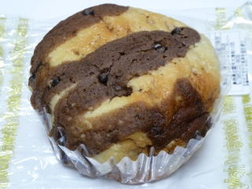
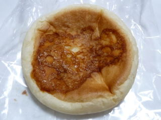

グッディーのミックスフルーツデニッシュ
2011/07/03
美味しそうなデニッシュですね。

見た目、かちっとした感じがしますが、やわらかいデニッシュパンです。
中には、オレンジ系の味がするクリームが入っていました。
スーパーのグッディー（ウシオ）各店て販売しているパンです。
2011/07/03
美味しそうなデニッシュですね。

見た目、かちっとした感じがしますが、やわらかいデニッシュパンです。
中には、オレンジ系の味がするクリームが入っていました。
2011/06/12
グッディー北部店で買ったドーナッツです。
ミスドのオールドファッションっぽい感じです。
ミスドよりも大きくて柔らかい気がしました。

ドーナッツ生地にも抹茶が入ってて、爽やかな甘さでした。
2010/12/21
大きなシュークリームで、お買い得な感じがしました。

パイって感じではなく、フランスパンのような生地でちょっと固めだなと思いました。
でもそれがとっても美味しかったです。サイズが大きい分クリームも沢山入っているので、強めのパン生地とよくあっていました。
2010/11/28
ちょっと変わったメロンパンです。
グッディー北部店で買いました。（139円）

カップの中にはふんわりとしたマーブルチョコパン。その上がメロンパン風になっていました。
チョコがパンの中にも上にもあるので、甘かったです。
カップに入っているので、ちょっとケーキみたいな感じがしました。
2010/11/28
平べったいパンの中身が豚まんと同じです。
グッディーの北部店で買いました。（139円）

パンなので、冷めてても美味しいですね。
コンビニで肉まん買ったけど、すぐに食べなかったら冷たくなってるし、ちょっと水分が出て美味しくなかったなんて事が凄くたまにあるんですが、これだったらそんなことがなくていいですね。
パンがケースに入っているので、ちょっと清潔感があります。